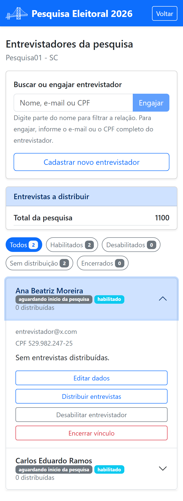

Parte 3 — Modo de operação
8. Entrevistadores
Os entrevistadores são as pessoas que vão a campo aplicar as entrevistas. No painel de gestão, toque em Entrevistadores da pesquisa. Abre-se a relação dos entrevistadores vinculados a esta pesquisa:

A tela tem quatro partes, de cima para baixo:
- o campo Buscar ou engajar entrevistador;
- o quadro Entrevistas a distribuir, com o total da pesquisa e, se ela for segmentada, o saldo de cada segmento — é a informação que diz se você precisa de mais gente em campo (a distribuição em si é feita em §9);
- os filtros, em forma de etiquetas com contadores;
- a relação propriamente dita.
8.1 Engajar um entrevistador
Engajar é vincular uma pessoa a esta pesquisa. No campo do alto, informe o e-mail ou o CPF completo dela e toque em Engajar. O botão só fica ativo quando o que você digitou é um e-mail ou um CPF completo — digitar um nome serve para filtrar a relação, não para engajar.
O entrevistador recebe, por e-mail, o link de acesso ao aplicativo, pelo qual ele define a própria senha. É o mesmo caminho que você percorreu em §2.2.
Se a pessoa ainda não tem cadastro, use Cadastrar novo entrevistador: abre-se o formulário com Nome completo, Empresa (opcional), CPF / CNPJ, E-mail e Telefone, além da Atribuição de cota de entrevistas (opcional). Toque em Salvar.
8.2 Encontrar alguém na relação
Em pesquisas grandes, a relação fica longa. Há duas formas de chegar a quem você procura:
- o campo do alto — digite parte do nome, o e-mail ou o CPF e a relação vai sendo filtrada enquanto você digita;
- as etiquetas de filtro — Todos, Habilitados, Desabilitados, Sem distribuição e Encerrados. Cada uma mostra quantos entrevistadores estão naquela condição, e tocar em uma delas reduz a relação a esse grupo. A etiqueta Sem distribuição é a mais útil no dia a dia: mostra quem está vinculado à pesquisa mas ainda não recebeu entrevistas.
8.3 A ficha de cada entrevistador
Cada pessoa aparece em uma linha compacta com o nome, a situação e quantas entrevistas já lhe foram distribuídas. A situação é dada por duas etiquetas, que respondem a duas perguntas diferentes:
- autorizado ou aguardando início da pesquisa — se ele já pode começar a trabalhar (a autorização é dada por você, em §11);
- habilitado ou desabilitado — se você o mantém ativo nesta pesquisa.
Toque na linha para abri-la. Ela se expande ali mesmo, mostrando o e-mail, o CPF, quantas entrevistas ele tem em cada segmento e as ações disponíveis:

- Editar dados — abre o cadastro dele para correção;
- Distribuir entrevistas — leva à tela de distribuição (§9) e volta para cá quando você terminar;
- Desabilitar / Habilitar entrevistador;
- Encerrar vínculo.
8.4 Desabilitar, habilitar e encerrar
Desabilitar é uma pausa: a pessoa continua vinculada à pesquisa e mantém o que já lhe foi distribuído, mas não consegue iniciar entrevistas até você habilitá-la de novo. Use quando alguém se afasta por alguns dias.
Encerrar vínculo é definitivo para esta pesquisa: a pessoa deixa de fazer parte dela. O saldo de entrevistas que estava com ela e ainda não foi realizado retorna ao saldo “a distribuir” do segmento de onde saiu, pronto para ser repartido de novo. Quem teve o vínculo encerrado continua aparecendo na relação, sob a etiqueta Encerrados, para que você acompanhe o que foi realizado por essa pessoa.
Encerrar o vínculo com esta pesquisa não apaga o cadastro da pessoa: ela pode ser engajada em outra pesquisa sua, ou por outro coordenador.